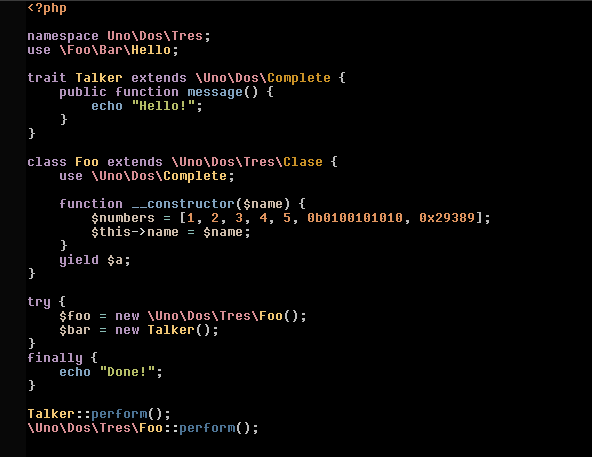
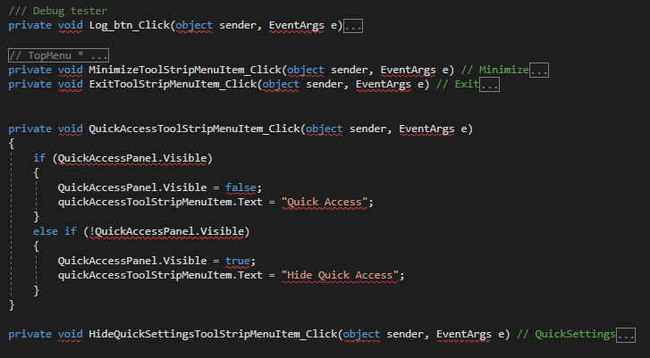
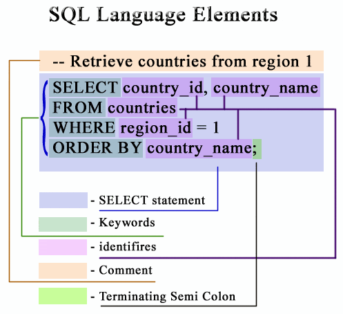
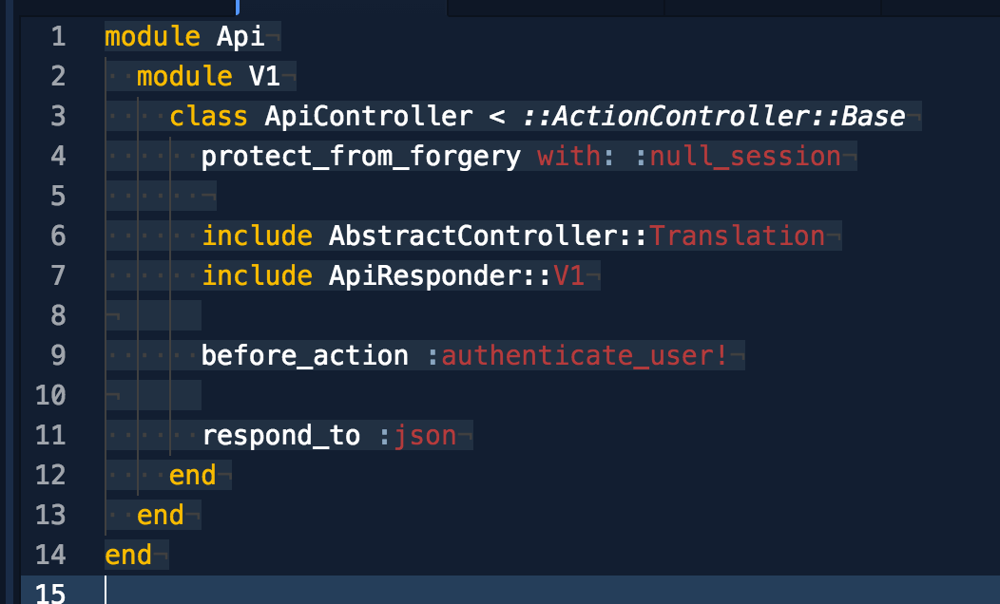
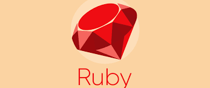

Programming Language
| Language |
syntax |
link |
symbol |
defination |
PhP Programming Language |
 |
PhP |
 |
PhP is a general-purpose scripting language especially suited to web development.[5] It was originally created by Danish-Canadian programmer Rasmus Lerdorf in 1994.[6] The PHP reference implementation is now produced by The PHP Group.[7] PHP originally stood for Personal Home Page,[6] but it now stands for the recursive initialism PHP: Hypertext Preprocessor.[8]
PHP code is usually processed on a web server by a PHP interpreter implemented as a module, a daemon or as a Common Gateway Interface (CGI) executable. On a web server, the result of the interpreted and executed PHP code – which may be any type of data, such as generated HTML or binary image data – would form the whole or part of an HTTP response. Various web template systems, web content management systems, and web frameworks exist which can be employed to orchestrate or facilitate the generation of that response. |
C# Programming Language |
 |
C# |
 |
C# This article is about the letter. For the programming language, see C (programming language). For other uses, see C (disambiguation).
For technical reasons, "C#" redirects here. For uses of C#, see C-sharp.
For technical reasons, "C# (programming language)" redirects here. For the programming language by Microsoft, see C Sharp (programming language). |
SQL Programming Language |
 |
SQL |
 |
SQL (About this soundlisten) S-Q-L,[4] /ˈsiːkwəl/ "sequel"; Structured Query Language)[5] is a domain-specific language used in programming and designed for managing data held in a relational database management system (RDBMS), or for stream processing in a relational data stream management system (RDSMS). It is particularly useful in handling structured data, i.e. data incorporating relations among entities and variables.
SQL offers two main advantages over older read–write APIs such as ISAM or VSAM. Firstly, it introduced the concept of accessing many records with one single command. Secondly, it eliminates the need to specify how to reach a record, e.g. with or without an index. |
Ruby Programming Language |
 |
Ruby |
 |
A ruby is a pink to blood-red colored gemstone, a variety of the mineral corundum (aluminium oxide). Other varieties of gem-quality corundum are called sapphires. Ruby is one of the traditional cardinal gems, together with amethyst, sapphire, emerald, and diamond.[3] The word ruby comes from ruber, Latin for red. The color of a ruby is due to the element chromium.
Some gemstones that are popularly or historically called rubies, such as the Black Prince's Ruby in the British Imperial State Crown, are actually spinels. These were once known as "Balas rubies". |